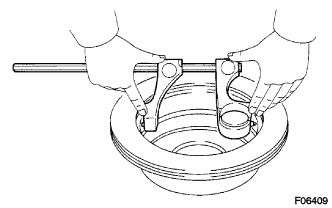
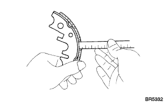
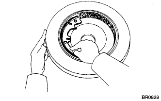

PARKING BRAKE ASSEMBLY > INSPECTION |
| 1. INSPECT BRAKE DISC INSIDE DIAMETER |
|  |
Using a brake drum gauge or equivalent, measure the inside diameter of the disc.
| 2. INSPECT PARKING BRAKE SHOE LINING THICKNESS |
|  |
Using a ruler, measure the thickness of the shoe lining.
| 3. CHECK BRAKE DISC AND PARKING BRAKE SHOE LINING FOR PROPER CONTACT |
|  |
Apply chalk to the inside surface of the disc. Rub the brake shoe lining against the disc and check that full contact is achieved between the brake shoe and disc (chalk is transferred to the entire brake shoe lining).
If the contact between the brake disc and the shoe lining is improper, make adjustments it using a brake shoe grinder or replace the brake shoe assembly.